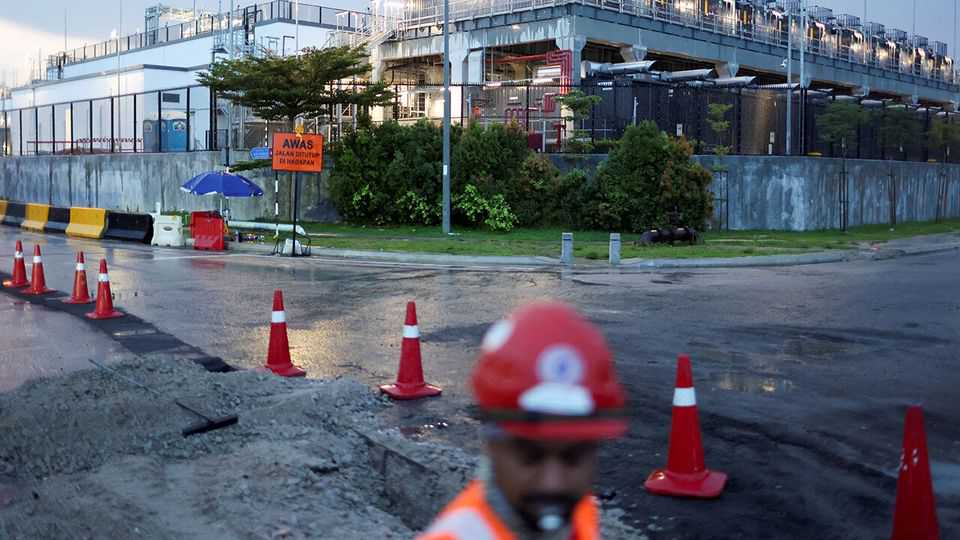

Malaysia is enjoying a massive data-centre boom
Could it help the country escape its middle-income trap?

Sep 10th 2026
How do you placate locals worried about a data-centre build-out? One way, perhaps, is to have construction companies declare their love for their hosts. That seems to be the plan in the southern Malaysian state of Johor, which is undergoing one of the world’s most frenetic data-centre expansions. The barricades of construction sites are emblazoned with the slogan “I love Johor” (the “love” is a cutesy heart symbol).
Firms have been drawn to Johor by cheap land, reliable energy and welcoming policy. Five years ago the state had 10MW of data-centre capacity. Now it has 110 times more. And the boom extends beyond that state’s borders: Malaysia as a whole may have around 7.7GW of capacity by 2030. Data-centre investment amounts to 18% of the country’s GDP, the highest share in the world, according to HSBC, a bank.

All of this is helping charge up Malaysia’s economy. It grew 6% year on year in the second quarter, up from 5.4% in the first quarter (see chart). Growth was driven by manufacturing and construction, both tied to data-centre building. Exports have surged too. Malaysia has long assembled basic semiconductors; that has now given it a foothold in the artificial-intelligence supply chain.
Sound economic management has helped, says Yeah Kim Leng of Sunway University in Kuala Lumpur. Relative political stability and clearer economic policy over the past few years have restored foreign investors’ confidence, he says. The country has benefited from tensions between America and China: exports to America have soared (up 80% year on year in July) in part because firms of all sorts are moving production to Malaysia as part of “China-plus-one” strategies. Investments in data centres, meanwhile, have been coming from both superpowers.
Now Malaysia wants to move up the AI value chain. Despite hosting so many servers, little cutting-edge work—such as chip design or AI model training—is done there. The government says it will make Malaysia an “AI nation”; it wants to rank among the world’s ten leading countries on measures of AI development by 2030. It is becoming more picky about what kinds of new data centres it will accept. It wants ones that will create high-skilled jobs, support research and develop domestic suppliers.
One challenge is to make sure the benefits of growth are widely spread. GDP per person in Kuala Lumpur, the capital, is around eight times that in Kelantan, a northern state. Export-oriented industries are doing well, but domestically oriented businesses much less so, says Dr Yeah. Wage growth has failed to keep up with rising living costs.
Another challenge will be handling growing concerns about the data centres’ energy use and effect on the environment. Their power requirements currently amount to around 7% of Malaysia’s available generating capacity. That share could reach nearly 31% by 2035, reckons S&P Global, a rating agency. Earlier this year dozens of residents of a town in Johor protested against dust from data-centre construction and pressure on local water supplies.
Yet unlike in the West, isolated opposition to data centres has so far not turned into a wider backlash. In July voters returned Johor’s state government to power with an increased majority, thanks partly to solid growth. For now, at least, Johor seems to love its data centres back. ■
For exclusive coverage of Asian politics, economics and security, sign up to Asia Bulletin, our weekly subscriber-only newsletter.